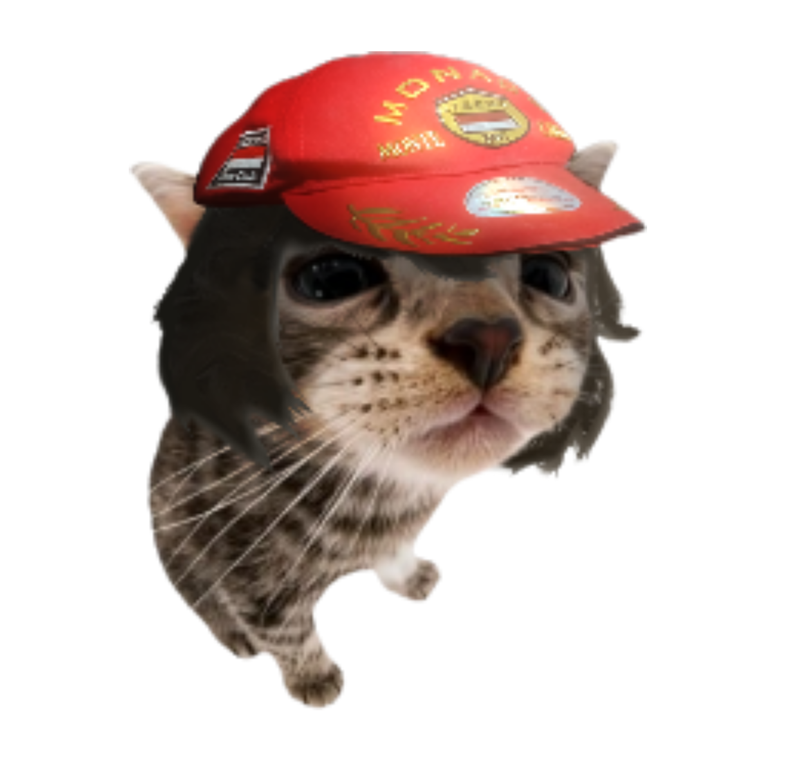

01
TEMPORADA 1
ASSISTIR ↗
A FALHA
o início de tudo. louis descobre que sua experiência de clonagem saiu do controle.
UMA EXPERIÊNCIA QUE DEU MUITO ERRADO
um gato cientista. mil clones do mal. e uma quantidade absurda de problemas.

Louis é um gato cientista de boné vermelho que tentou realizar uma experiência de clonagem.
o plano era criar uma cópia. o resultado foi completamente diferente.
mil clones do mal surgiram, e eles começaram a sofrer mutações.
o início de tudo. louis descobre que sua experiência de clonagem saiu do controle.
a situação continua evoluindo enquanto a ameaça dos clones aumenta.
animação e edição concluídas. faltam dublagem, música e efeitos sonoros.
um dos aliados de louis. equipado com um revólver com mira.
especialista em combate à distância e parte da luta contra os clones.
uma equipe que entra em ação quando a situação fica ainda mais caótica.
um dog diferente dos aliados que sequestrou louis antes de ser rendido.
louis inicia seu experimento.
mil clones surgem.
os clones começam a ficar mais perigosos.
louis é capturado por outro dog.
a equipe consegue render o sequestrador.
louis confunde seu aliado com um inimigo.